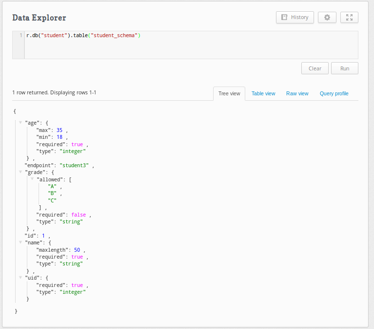
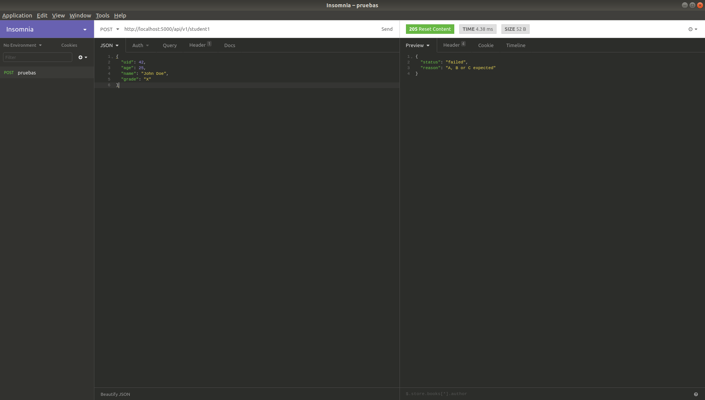
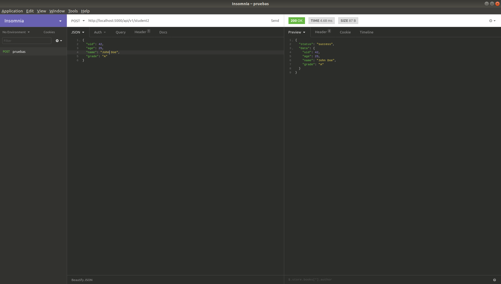

Validando un API rest asíncrono con Cerberus
Posted on sáb 08 junio 2019 in Tutorial de Python • 8 min read
En este artículo se mostrará como crear un API rest asincrono usando aiohttp, se usará un script para acceder a la base de datos NoSQL RethinkDB de manera asíncrona, y 2 formas de validar la entrada de datos del API, la primera evaluando cada variable, la segunda se usará cerberus donde se tiene un esquema de la entrada de datos y por último la tercera, usará cerberus pero el esquema estará guardado en rethinkdb.
El repositorio del código completo de este tutorial se encuentra en github.
Este artículo se basa en el artículo Using Data Validation for Robust APIs y en el artículo How to create REST API using aiohttp, donde se explica como hacer un API rest sincrónico con aiohttp.
La documentación de cerberus la pueden ver en el siguiente cerberus.
Se tiene la siguiente estructura de directorios y archivos del API rest:
async-api-rest-example
├── app.py
├── README.md
├── resources
│ ├── api_resources.py
│ ├── home.py
│ ├── __init__.py
│ └── rethink_async.py
└── run.py
Descripción de los archivos:
- app.py: Se definen las rutas de los endpoint del API rest.
- run.py: Script que permite correr el API rest.
- resources/rethin_async.py: Módulo que permite acceder de manera asíncrona a rethinkdb.
- resources/home.py: Página de inicio del API rest.
- resources/api_resources.py: Donde se define los métodos HTTP del API rest.
Script run.py
Este script permite iniciar el API rest, a continuación el código:
```python
!/usr/bin/env python3
Se importa aiohttp
from aiohttp import web
Se importa las rutas de los endpoint
from app import setup_routes
async def init_app(): #Se instancia la aplicación app = web.Application() #A la aplicación se le pasa las rutas setup_routes(app) #Se retorna la aplicación return app
def main(): #Se define la dirección del host, el puerto y se corre la Ap en dicha IP y puerto host = '0.0.0.0' port = 5000 app = init_app()
web.run_app(app,host=host, port=port)
if name == 'main': main()
```
Script app.py
Este script define las rutas y URLs de los endpoint del API rest. A continuación el código:
```python
Se importa los recursos del api rest y el home .
from resources.api_resources import Student from resources.home import getIndex
def setup_routes(app): student = Student() #Se tiene 3 endpoints, el primero validación clásica, # el segundo validando con cerberus, y el 3ero con cerberus #pero guardando el esquema de validación en una base de datos app.router.add_post('/api/v1/student1',student.getData1) app.router.add_post('/api/v1/student2',student.getData2) app.router.add_post('/api/v1/student3',student.getData3) #Por seguridad no se permite ingresar a la raiz del API rest app.router.add_get('/api/v1/', getIndex) app.router.add_get('/', getIndex)
```
Script rethink_async.py
```python
!/usr/bin/env python3
import rethinkdb as r import asyncio from datetime import datetime
r.set_loop_type("asyncio")
async def createDB(server,port,database): """ Create DB to database server.
Parameters
----------
server: IP server to connect
port: Port server to connect
database: Database name to create
"""
conn = await r.connect(server, port)
if database not in await r.db_list().run(conn):
return await r.db_create(database).run(conn)
async def createTable(server,port,database,table): """ Create Table in database.
Parameters
----------
server: IP server to connect
port: Port server to connect
database: Database name to connect
"""
conn = await r.connect(server, port)
return await r.db(database).table_create(table).run(conn)
async def listdb(server,port): """ List all database in database server.
Parameters
----------
server: IP server to connect
port: Port server to connect
"""
conn = await r.connect(server, port)
return await r.db_list(conn)
async def listtables(server,port,database): """ Lista tables from database.
Parameters
----------
server: IP server to connect
port: Port server to connect
database: Database name to list tables
"""
conn = await r.connect(server, port)
return await r.db(database).table_list().run(conn)
async def insert(server,port,database,table,data): """ Insert dictionary in table.
Parameters
----------
server: IP server to connect
port: Port server to connect
database: Database name to connect
table: table to insert Dictionary
data: Dictionary data to insert
"""
conn = await r.connect(server, port)
result = await r.db(database).table(table).insert(data).run(conn)
await conn.close()
return result
async def getAll(server,port,database,table,pattern=None): """ Get All documents from pattern search
Parameters
----------
server: IP server to connect
port: Port server to connect
database: Database name to connect
table: table name to search
pattern: Dictionary with pattern search
"""
conn = await r.connect(server, port)
if pattern == None:
cursor = await r.db(database).table(table).run(conn)
else:
cursor = await r.db(database).table(table).filter(pattern).run(conn)
elements = list()
while (await cursor.fetch_next()):
item = await cursor.next()
elements.append(item)
await conn.close()
return elements
async def getFirst(server, port, database, table, pattern = None): """ Get first document from pattern search
Parameters
----------
server: IP server to connect
port: Port server to connect
database: Database name to connect
table: table name to search
pattern: Dictionary with pattern search
"""
conn = await r.connect(server, port)
if pattern == None:
cursor = await r.db(database).table(table).run(conn)
else:
cursor = await r.db(database).table(table).filter(pattern).run(conn)
elements = list()
while (await cursor.fetch_next()):
item = await cursor.next()
elements.append(item)
break
await conn.close()
return elements
async def delete(server,port,database,table,pattern): """ Delete a document from pattern search
Parameters
----------
server: IP server to connect
port: Port server to connect
database: Database name to connect
table: table name to search
pattern: Dictionary with pattern search
"""
conn = await r.connect(server, port)
result = await r.db(database).table(table).filter(pattern).delete().run(conn)
await conn.close()
return result
async def update(server,port,database,table,data,pattern=None): """ Update a document from pattern search
Parameters
----------
server: IP server to connect
port: Port server to connect
database: Database name to connect
table: table name to search
pattern: Dictionary with pattern search
"""
conn = await r.connect(server, port)
if (type(data) == type(dict())):
if pattern == None :
result = await r.db(database).table(table).update(data).run(conn)
await conn.close()
return result
else:
result = await r.db(database).table(table).filter(pattern).update(data).run(conn)
await conn.close()
return result
```
Script api_resouces.py
En el script se tienen 3 métodos:
- getData1: Este método válida cada una de las entrada de datos.
- getData2: Este método válida la entrada de datos con un esquema validando con cerberus.
- getData3: Este método vuelve a usar cerberus pero ahora tomando el esquema a validar usando rethinkdb.
A continuación se muestra el código:
```python
import json from aiohttp import web from cerberus import Validator import rethinkdb as r
from .rethink_async import *
version = '0.0.1'
student_schema = { 'uid': { 'required': True, 'type': 'integer', }, 'age': { 'required': True, 'type': 'integer', 'min': 18, 'max': 35, }, 'name': { 'required': True, 'type': 'string', 'maxlength': 50, }, 'grade': { 'required': False, 'type': 'string', 'allowed': ['A', 'B', 'C'], } }
class Student(object):
def __init__(self):
pass
async def getData1(self,request):
#Se convierte el json a un diccionario
try:
data = json.loads(await request.text())
except json.JSONDecodeError:
response_obj = {'status': 'failed', 'reason': "Ill-formed JSON"}
return web.Response(text=json.dumps(response_obj), status=205)
#Se valida los datos de entrada
try:
uid = int(data['uid'])
except (KeyError, ValueError):
response_obj = {'status': 'failed', 'reason': "Expecting uid:int"}
return web.Response(text=json.dumps(response_obj), status=205)
try:
age = int(data['age'])
if not 18 < age < 35:
raise ValueError('Bad age')
except (KeyError, ValueError):
response_obj = {'status': 'failed', 'reason': "Expecting age:int within the range [18:35]"}
return web.Response(text=json.dumps(response_obj), status=205)
try:
name = str(data['name'])
if len(name) > 50:
raise ValueError('Max limit 50')
except (KeyError, ValueError):
response_obj = {'status': 'failed', 'reason': "Expecting name:str within the range [0:50]"}
return web.Response(text=json.dumps(response_obj), status=205)
try:
grade = data.get('grade')
if grade is None:
grade = 'A'
if grade not in ('A', 'B', 'C'):
response_obj = {'status': 'failed', 'reason': "A, B or C expected"}
return web.Response(text=json.dumps(response_obj), status=205)
except (KeyError, ValueError):
response_obj = {'status': 'failed', 'reason': "Expecting grade:str A, B or C expected"}
return web.Response(text=json.dumps(response_obj), status=205)
#Luego de validar se construye el diccionario de salida de datos como json
data_output = dict()
data_output['uid'] = data['uid']
data_output['age'] = data['age']
data_output['name'] = data['name']
data_output['grade'] = data.get('grade', 'A')
response_obj = {
'status': 'success',
'data': data_output
}
return web.Response(text=json.dumps(response_obj), status=200, content_type='application/json')
async def getData2(self,request):
#Se convierte el json del post en un diccionario
try:
data = json.loads(await request.text())
except json.JSONDecodeError:
response_obj = {'status': 'failed', 'reason': "Ill-formed JSON"}
return web.Response(text=json.dumps(response_obj), status=205)
#Con la variable que contiene el esquema se realiza la validación del json
student_validator = Validator(student_schema)
if not student_validator.validate(data):
msg = student_validator.errors
response_obj = {'status': 'failed', 'reason': msg}
return web.Response(text=json.dumps(response_obj), status=205)
#Se construye el diccionario de la salida de los datos vía json
data_output = dict()
data_output['uid'] = data['uid']
data_output['age'] = data['age']
data_output['name'] = data['name']
data_output['grade'] = data.get('grade', 'A')
response_obj = {
'status': 'success',
'data': data_output
}
return web.Response(text=json.dumps(response_obj), status=200, content_type='application/json')
async def getData3(self,request):
#Se convierte el json en un diccionario
try:
data = json.loads(await request.text())
except json.JSONDecodeError:
response_obj = {'status': 'failed', 'reason': "Ill-formed JSON"}
return web.Response(text=json.dumps(response_obj), status=205)
#Si yo se, no debería tener la configuración de la base de datos acá,
#pero era para no alargar el código de ejemplo
#Se definen el servidor, puerto, base de datos, la tabla y el patrón de busqueda
server = "localhost"
port = 28015
db = "student"
table = "student_schema"
pattern = {"endpoint": "student3"}
#Se realiza la consulta a rethinkdb de manera asincrona
student_schemadb = await getFirst(server, port, db, table, pattern)
#Se quitan del diccionario el id y el endpoint a fin de realizar la evaluación del esquema
student_schema = {item: student_schemadb[0][item] for item in list(student_schemadb[0].keys()) if item != 'id'}
student_schema = {item: student_schema[item] for item in list(student_schema.keys()) if item != 'endpoint'}
#Se valida el esquema con los datos suministrados vía post
student_validator = Validator(student_schema)
if not student_validator.validate(data):
msg = student_validator.errors
response_obj = {'status': 'failed', 'reason': msg}
return web.Response(text=json.dumps(response_obj), status=205)
#Se toman los datos y se colocan en el diccionario para el json de salida
data_output = dict()
data_output['uid'] = data['uid']
data_output['age'] = data['age']
data_output['name'] = data['name']
data_output['grade'] = data.get('grade', 'A')
response_obj = {
'status': 'success',
'data': data_output
}
return web.Response(text=json.dumps(response_obj), status=200, content_type='application/json')
```
Base de datos rethinkdb con el esquema para cerberus
Para que el método getData3 funcione es necesario tener almacenado en la base de datos rethinkdb el esquema.
El proceso de instalación de rethinkDB vía docker, se deja en el siguiente artículo de platzi.
Para insertar los datos se ejecuta en el dashboard de rethinkDB (http://localhost:8080) el siguiente comando:
r.db("student").table("student_schema").insert({id:1,endpoint: 'student3',uid: {
'required': true,
'type': 'integer'},
age: {
'required': true,
'type': 'integer',
'min': 18,
'max': 35
},
name: {
'required': true,
'type': 'string',
'maxlength': 50
},
grade: {
'required': false,
'type': 'string',
'allowed': ['A', 'B', 'C']
}})
De esa forma se inserta los datos en la tabla.
Para consultar la tabla vía dashboard se ejecuta:
r.db("student").table("student_schema")
A continuación se muestra la tabla:

Iniciar el API rest.
Para iniciar el API rest se tiene que tener instalado la librería rethinkdb y aiohttp:
pip install rethinkdb aiohttp
Luego de instalada se ejecuta el script run.py:
``` python run.py
```
Si se tiene la siguiente salida el API rest está corriendo sin problemas:
``` ======== Running on http://0.0.0.0:5000 ======== (Press CTRL+C to quit)
```
Consultas al API rest
Para consultar el API rest se puede usar insomia o postman, ambos son clientes API rest.
Se tienen 3 endpoint todos vía método post que se le pasará un json como el siguiente:
json
{
"uid": 42,
"age": 25,
"name": "John Doe",
"grade": "A"
}
Los urls son los siguientes:
- http://localhost:5000/api/v1/student1 : Usa el método getData1.
- http://localhost:5000/api/v1/student2 : Usa el método getData2.
- http://localhost:5000/api/v1/student3 : Usa el método getData3.
Primer endpoint:
Se realiza la consulta con el json mostrado anteriormente:
Ahora se modifica por ejemplo la variable grade a X:

En este caso el valor X para la variable grade no es válido.
Segundo endpoint:
En este caso se usa cerberus y la variable que contiene el esquema para validar:
Se realiza la consulta con el json original:

Ahora se realiza la consulta modificando la variable grade con el valor de Z:

El mensaje es más genérico no es el que se definió en el primer método.
Tercer endpoint:
Acá no se verán cambios significativos en la consulta, lo interesante es que, al tener muchos endpoint con distintas entradas de datos, lo mejor es usar una base de datos donde se tenga almacenada cada esquema por endpoint.
Así que el resultado sería el mismo que los del segundo endpoint.
¡Haz tu donativo! Si te gustó el artículo puedes realizar un donativo con Bitcoin (BTC) usando la billetera digital de tu preferencia a la siguiente dirección: 17MtNybhdkA9GV3UNS6BTwPcuhjXoPrSzV
O Escaneando el código QR desde la billetera: